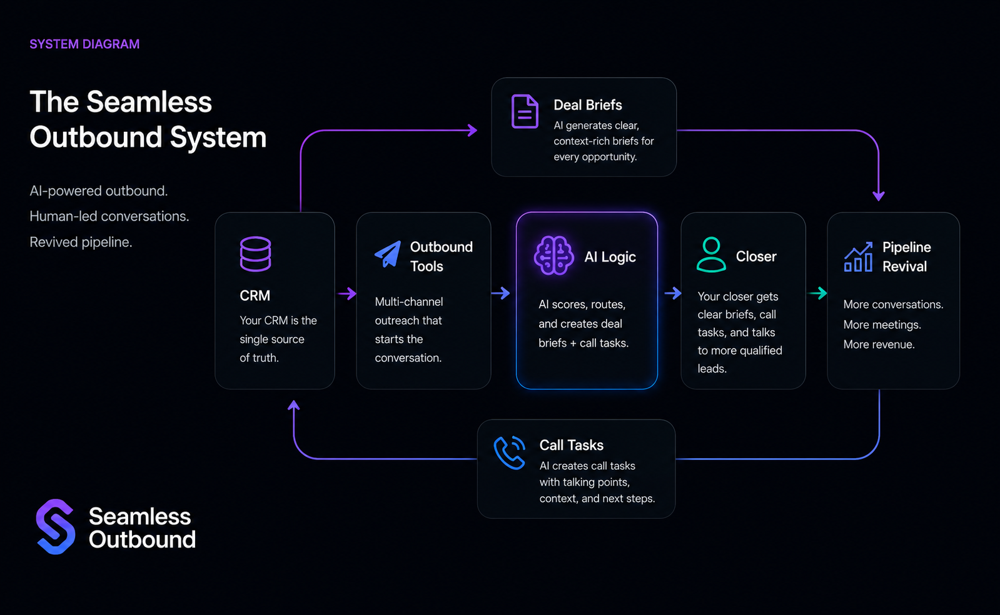

Turn your CRM + outbound tools into a predictable call‑generating system.
Seamless Outbound revives your old leads, systemizes your outbound, and feeds your closer with qualified conversations — without hiring SDRs or adding more tools.

Who this is for
Seamless Outbound is built specifically for marketing agencies who:
- • Have a closer but not enough calls
- • Have a CRM full of untouched or old leads
- • Have outbound tools but no system connecting them
- • Tried outbound before but couldn’t make it consistent
- • Want predictable pipeline without hiring SDRs
Why this works
Outbound tools send messages. CRMs store data. But neither produces revenue on their own. Seamless Outbound connects everything into a single operating system that revives pipeline and feeds your closer.
- • CRM revival turns old leads into booked calls
- • AI logic qualifies, routes, and escalates opportunities
- • Deal briefs give your closer context before every call
- • Call tasks ensure no lead is ever forgotten
- • Weekly reporting keeps pipeline predictable
What you get
- • CRM cleanup + revival
- • AI qualification logic
- • Deal briefs for every opportunity
- • Call tasks for your closer
- • Escalation rules
- • Pipeline reactivation
- • Weekly reporting
- • Full outbound orchestration
Before vs After Seamless Outbound
Before
- • Dead CRM
- • Old leads ignored
- • Closer idle
- • Outbound random
- • No predictable calls
After
- • CRM revived
- • Old leads reactivated
- • Closer fed daily
- • Outbound systemized
- • Predictable booked calls
The outcome
When the system is live, your agency gets predictable pipeline without hiring SDRs or adding more tools.
- • More qualified conversations
- • A closer who knows who to call next
- • Old leads revived into booked calls
- • A CRM that produces revenue
- • Outbound that hunts even when inbound slows
- • A scalable system, not a freelancer
A note from the founder
I’ve spent over a decade in outbound sales, CRM architecture, and automation engineering. I built Seamless Outbound because agencies don’t need more tools — they need a system that revives pipeline and feeds their closer. If you want predictable calls without hiring SDRs, let’s talk.
Ready to revive your pipeline?
On a 30‑minute strategy call, we’ll walk through your CRM, outbound tools, and where revenue is leaking — then map out your Seamless Outbound system.
Book your 30‑minute strategy call